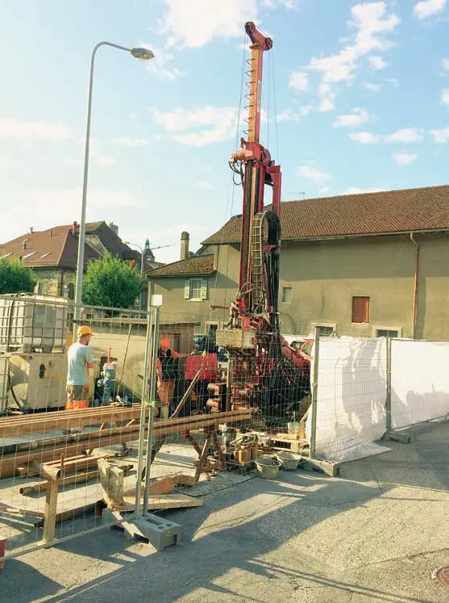
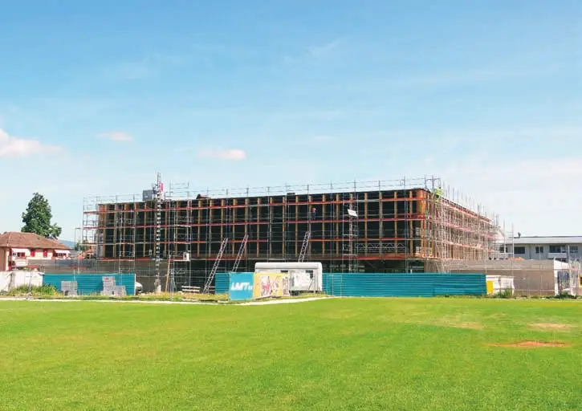
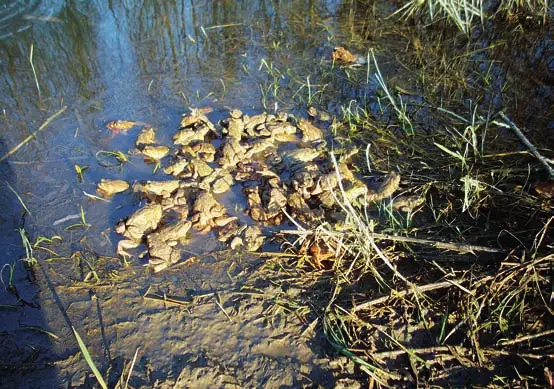

Présentation
Commune vaudoise de plus de 4 000 habitants, centre régional du nord du district de Morges et siège de l'ARCAM. Elle construit le complexe scolaire des Chavannes avec piscine intercommunale et planifie un nouvel EMS. Elle dispose d'un accès direct au réseau CFF par son funiculaire et veut sauver son cinéma.
Texte rédigé avec l'aide de l'IA à partir de l'édition imprimée du magazine. En savoir plus
Photos
Articles
 Image IA
Image IACossonay – Objectif : rester un pôle régional fort
Interview de Georges Rime, syndic
Image IACossonay, le charme discret du Pied du Jura vaudois
Le syndic veut un développement raisonnable et maîtrisé

Interview · texte intégralCossonay – Un nouveau réseau de communes pour une abondance d'eau potable
Interview de Claude Moinat, municipal (eaux et épuration, services industriels, routes, finances)

Interview · texte intégralCossonay – Un grand dynamisme social et culturel
Interview de Nicole Baudet, vice-présidente de la Municipalité (bâtiments, constructions, affaires sociales, santé, culture)

Interview · texte intégralCossonay – Un emplacement géographique très favorable
Interview de Bernard Ebener, municipal (parcs, environnement et développement durable, informatique, sport, forêts, défense incendie)
Cossonay – Un centre entièrement dédié à l'enfance
Interview de Valérie Induni, municipale (protection civile, cultes, écoles et petite enfance)